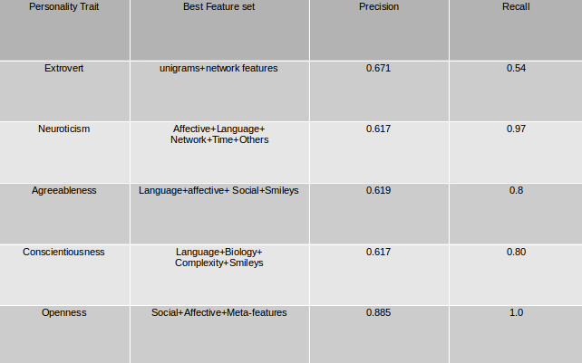

Query Expansion
By
- A.Anuraag
- Navya Reddy
- Nithin
- Sagar
Demonstrating our Project
Abstract
To automatically classify the personality traits of
the author based on his/her posts in social media.
It is evident that there is a strong
correlation between user's personality and the
user's status text on the social media. Human
personality can be summarized by five personality
traits as mentioned below.
Extrovert vs. Introvert (sociable, assertive, playful
vs. aloof, reserved, shy)
Emotional stability vs.Neuroticism (calm,
unemotional vs. insecure, anxious)
Agreeableness vs. Disagreeable (friendly,
cooperative vs. antagonistic, fault finding)
Conscientiousness vs unconscientiousness (self
disciplined, organized vs. inefficient, careless)
Openness to experience (intellectual, insightful vs.
shallow, unimaginative)
Hence we represent human personality as a vector
of the above five traits with boolean values (i.e yes/no)
Introduction
In recent years the interest of the scientific
community towards Personality Recognition has
grown incredibly, since there are many applications
that can take advantage of personality recognition,
including social network analysis, social
computing, recommendation systems, deception
detection, authorship attribution, sentiment
analysis/opinion mining, and others.
The most difficult thing here is collecting the
facebook data and how to classify the person. Most
of the facebook users are not ready to give away
their posts. But thanks to mypersonality.org, they
have collected data from various people and they
provide two two gold standard labeled datasets:
Essays and MyPersonality. Essays is a large
dataset of streamofconsciousness texts (about 2400,
one for each user), collected between 1997 and
2004 and labeled with personality classes. This
dataset can be used for identifying the feature set of
the personality traits. MyPersonality consists of
about 10000 Facebook status updates of 250 users,
plus Facebook network properties (including
network size, betweenness centrality, density and
transitivity) labeled wxith personality. This dataset
can be divided into training data and test data.
Approach
Our goal is to predict these traits for a given user,
where we identify a user with his set of available
status updates (treated together as one text per user
when extracting linguistic features), their time
stamps, and his social network properties.
Feature selection for each of the traits
Various
features were extracted and used. The feature set of
the trait is heavily accountable for the correctness
of the classifier we build.Social Network features
Social network features
7 features related to the social network of the user:
(1) network size, (2) betweenness,(3)
nbetweenness, (4) density, (5) brokerage, (6)
nbrokerage, and (7) transitivity.
Time-related features
7 features related to the time of the status updates
(we assume that all the times are based on one time
zone): (1) frequency of status updates per day, (2)
number of statuses posted between 6-12 am, (3)
number of statuses posted between 12-18,
(4)number of statuses posted between 18-24, (5)
number of statuses posted between 00-06, and (6)
number of statuses posted on weekdays (7) number
of statuses posted on weekends
Psychology features
13 features from the below categories which
include the emotional sent of the user.
i)Affective features
(1) Anxiety words ,(2) Positive emotion words , (3)
negative emotion words , (4) Anger words , (5)
sadness (6) Happiness words
ii)Social features
(1) Words related to family and friends
iii) Biological processes
(1)Body (2) health
iv)Personal concerns
(1)work (2)achievement (3) money (4) religion
(5)death
Unigrams & Bigrams based
A set of unigrams
specific to each of the traits can be predetermined
based on some metric and these unigrams can be
included in the feature set for the trait. These
unigrams can be extracted from the facebook data
along with essays dataset. To do this, first we
calculate the word count for each word in the entire
corpus and for each trait separately. Now we have 6
different word counts for each word. A word is
related more to a trait if, it occurs more in the
statuses related to the persons with that particular
trait as well as the word occurs less in the statuses
of the person not related to that same particular
trait. For a word W if x is the word count for the
trait t, and y is the totlal word count. Then, the
word W is more related to the trait t if x/(y-x) is
huge and x is more than a threshold value (both x
and y could be less. So x > th=reshold number).
Synonyms for each of the unigrams are also
handled .
Other features
6 features which are not included in the above
categories (1) total number of statuses per user,
(2)number of capitalized words, (3) number of
capital letters, (4) number of words that are used
more than once,(5) number of urls, and (6) number
of occurrences of the string PROPNAME — a
string used in the data to replace proper names of
persons for anonymisation purposes
Classification of the traits:
We built a different classifier model for each of the
5 personality traits from the training data which
distinctively classifies a user into 2 subclasses
yes/no assigning a value to that trait in the
personality vector of the user using SVM.
Training: Each user has one or more posts. All
these posts are combined and a feature vector for
each user is produced. Now there are feature
vectors and the category (for each trait, y/n for each
trait) for each user is labelled. Using this data, input
is sent to SVM and a classifier is built. This is done
five times for each trait. So, now there are five
classifiers.We use facebook status updates of
abbout 180 users to generate the training data set
Testing: In the similar manner the users in the test
data are mapped to a feature vector. Now there are
the feature vectors, their category(for each trait, y/n
for each trait) and classifier for each of the five
traits. Now the data is sent to SVM again for
testing and the results based on the classifier is
obtained. Now we calculate the Precision and
Recall from the results produced by the SVM and
the original classes the users belong to which we
have. Testing is done on facebook statuses of 70
users .
We compare the results of the svm calssifier taking
various possible combination of the features .we
give the score as a weighted average of precission
and recall
Challenges we faced ::
Determining the best features related to a trait is the major challenge. The features related to each personality trait are different and one that is an important feature of a trait may not be that important to the other traits, in fact it may act as an overfit for those traits.
Tools :
Libsvm
POS tagger - Stanford Tokenizer
WordNet
Experiments and results

Conclusions
We had some interesting findings on a set of 250
users and 9917 status updates. Even with a fairly
small set of training examples we can perform well,
hence Facebook status updates do contain
important cues of their author's personality types.
There is no single kind of features that gives the
best results for all personality traits. Advantages of
this are that training examples from different social
media platforms can be used in combination to
train more accurate models and that such models
are also applicable on social network sites for
which no training data is available. Aside from the
work we have presented in this report, there is clear
potential in more fine grained feature selection to
improve the classification results.
References
1.Recognising Personality Traits Using Facebook Status Updates
2. Ensemble Methods for Personality Recognition
3. Predicting Conscientiousness through Semantic Analysis of Facebook Posts
4. Personality Traits Recognition on Social Network
5.Using Nuances of Emotion to Identify Personality
6.MyPersonality organization
Resources
Code Base
https://github.com/anuraagvak/IRE-PersonalityRecognition-Final
Slide Show
http://www.slideshare.net/AnuraagAshokKumar/iremajorproject
Video
https://www.youtube.com/watch?v=3Dw4jGPH-5w&feature=youtu.be